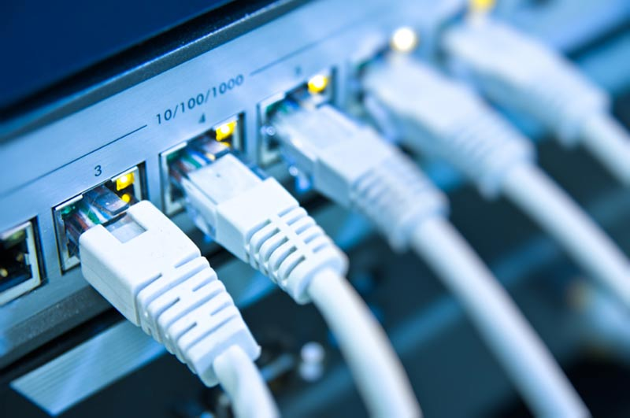

Tecnología de Redes
Las comunicaciones han logrado que cada vez más, este mundo lleno de cientos de países, miles de idiomas y dialectos, se conviertan en una aldea global. Tanto el desarrollo de nuevos y más modernos equipos de comunicación, como el abaratamiento de los mismos, están facilitando esta tarea. Millones de personas de diferentes partes del mundo interactúan constantemente utilizando los medios disponibles.
Una red es una configuración de computadora que intercambia información.Pueden proceder de una variedad de fabricantes y es probable que tenga diferencias tanto en hardware como en software, para posibilitar la comunicación entre estas es necesario un conjunto de reglas formales para su interacción.
- 

Las ventajas de usar comunicaciones digitales en vez de análogas.
Un sistema digital es cualquier dispositivo destinado a la generación, transmisión, procesamiento o almacenamiento de señales digitales. También un sistema digital es una combinación de dispositivos diseñado para manipular cantidades físicas o información que estén representadas en forma digital; es decir, que sólo puedan tomar valores discretos.
Se dice que un sistema es analógico cuando las magnitudes de la señal se representan mediante variables continuas, esto es análogas a las magnitudes que dan lugar a la generación de esta señal. Un sistema analógico contiene dispositivos que manipulan cantidades físicas representadas en forma analógica. En un sistema de este tipo, las cantidades varían sobre un intervalo continuo de valores.
Existen dos tipos de señales las cuáles son:
-La diferencia es que la comunicación análoga emite la señal tal y como es enviada mientras que la digital convierte las ondas a números o binarios.
Mini tutorial para descargar Cisco Packet Tracer
¿Cómo descargar Packet Tracer?Si quiere descargar Packet Tracer, siga estos pasos para registrarse en Networking Academy:
- Haga clic en el botón "Inscribirse para descargar Packet Tracer"
- Inscríbase en el curso Introduction to Packet Tracer.
- Complete su inscripción en Networking Academy
- Inicie el curso Introduction to Packet Tracer.
- Las instrucciones de descarga se encuentran dentro del curso.
El papel de los protocolos de comunicación
Tecnología de Internet
Internet es una red de redes que permite la interconexión descentralizada de computadoras a través de un conjunto de protocolos denominadoTCP/IP.
Redes Informáticas
Una red informática es aquella que está formada por computadoras (ordenadores), periféricos y otros dispositivos que se encuentran interconectados para que puedan compartir sus recursos. De acuerdo al modo de interconexión, a la relación entre los elementos y a otras cuestiones, se pueden clasificar las redes informáticas de distintas formas.Estas son algunas redes informáticas: MAN, WAN, LAN, FDDI, ATM
MAN es la sigla de Metropolitan Area Network, que puede traducirse como Red de Área Metropolitana. Una red MAN es aquella que, a través de una conexión de alta velocidad, ofrece cobertura en una zona geográfica extensa (como una ciudad o un municipio).
WAN es la sigla de Wide Area Network, una expresión en lengua inglesa que puede traducirse como Red de Área Amplia. Esto quiere decir que la red WAN es un tipo de red que cubre distancias de entre unos 100 y unos 1.000 kilómetros, lo que le permite brindar conectividad a varias ciudades o incluso a un país entero.
LAN, es una sigla que se refiere a Local Area Network (Red de Área Local). Estas redes vinculan computadoras que se hallan en un espacio físico pequeño, como una oficina o un edificio. La interconexión se realiza a través de un cable o de ondas.
FDDI, es una sigla que se refiere a Fiber Distributed Data Interface, (Interfaz de datos distribuida por fibra), es un conjunto de estándares ISO y ANSI para la transmisión de datos en redes de computadoras de área extendida (WAN) o de área local (LAN), mediante cables de fibra óptica. Se basa en la arquitectura Token Ring y permite una comunicación tipo dúplex (completo). Dado que puede abastecer a miles de usuarios, una LAN FDDI suele ser empleada como backbone para una red de área amplia (WAN).
ATM, es una sigla que se refiere a Asynchronous Transfer Mode (modo de transferencia asíncrona) es una tecnología de telecomunicación desarrollada para hacer frente a la gran demanda de capacidad de transmisión para servicios y aplicaciones. ATM es una tecnología de red reciente que, a diferencia de Ethernet, red en anillo y FDDI, permite la transferencia simultánea de datos y voz a través de la misma línea.